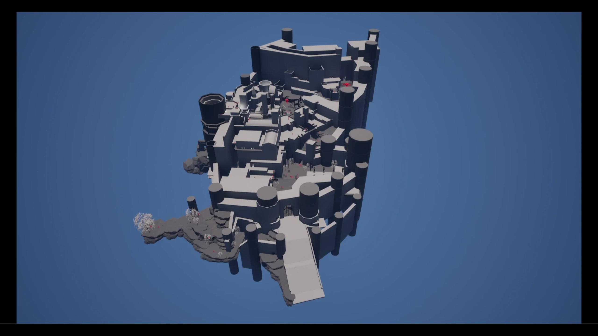

路线引导 · 从城门到仓库
我画流程图时，从葛托克的小房间拉出了两条线。穿正门会进入瓮城。走沿墙小路，则要经过山坡和城墙外栈道，最后从侧面钻进仓库。俯视时，两条线都指向城内，但站在人物的高度看，外墙挡住了后面的路，沿途能读到的是下一个落脚处。
- 葛托克的小房间
- 沿墙小路
- 城外山地
- 城墙外栈道
- 仓库
仓库里的转折更有意思。二层的楼梯间上了锁，要先穿过狭窄通路，在三层小黑屋取得钥匙，再折回二层开门上四层。第一次路过时，一扇打不开的门留下了记忆。拿到钥匙的那一刻，回头就有了具体的去处。
灯光布置 · 先让人看见门
这段白盒里，我从灰暗的房间朝门走。门板和墙面颜色接近，先吸引视线的是门旁壁灯照出的一小片暖色。走近才看清门框，并读到需要钥匙的提示。回看录像，把镜头停在人物还没靠近的位置，也能认出要去试的那扇门。
我把这段分成远、近两次判断。远处靠墙面的明暗差找到入口，近处靠提示确认入口的状态。若把整面墙照得一样亮，门框就要和墙一同被搜索。这里最值得保留的是那一小块照亮门边的范围，以及旁边仍然暗着的走廊。
奖励布置 · 屋顶的护符，大厅的宝箱
沿流程图找奖励时，我记了两处。屋顶支线把回报放在爬升的尽头，大厅支线则先把奖励和守卫放在同一次判断里。
壁炉小屋上方
屋顶有一根斜向上的残柱，接到另一片可行走的屋面。沿柱上行、越过守兵，最高的平台才是护符所在。残柱的坡度先给出一个可以试走的方向，护符则兑现了这次绕行。
接肢大厅二层
我的图上，厨房二层露台接出两条路。一边是单向门，另一边通往标有高亮宝箱和一名守卫的大厅二层。看见宝箱后，还得决定怎么绕过去、何时接近守卫。奖励的位置也就影响了进场路线。
电梯与开门 · 第二次经过同一处
升降梯把上下层接回一起
沿城墙外侧向下探索，途中会经过粪金龟和熔炉骑士，走到交通核底部才解锁电梯。在流程图里，这一段最后指回交通核二层。走过高低差、拐角和战斗之后，再从熟悉的楼层出来，刚才绕过的空间才容易对上。下次从赐福出发，这条支线的入口也换了一个位置。
靠近、按 E，再穿过门洞
下面是演示里的连续两帧。第一帧留住了靠近门时的 E 提示，第二帧能看见原先被门板挡住的通路。在流程图上，厨房二层的单向门和下水道入口附近的单向门都有方向。对白盒来说，能从哪一侧触发、推开后接回哪一段路，和门洞本身的位置同样重要。
路径图与白盒总览
这张图保留了主路之外的屋顶、露台、下落点和捷径。可以沿其中一条线追踪，也可以对照白盒总览，看平面上挨着的两个房间是否真的在同一层。